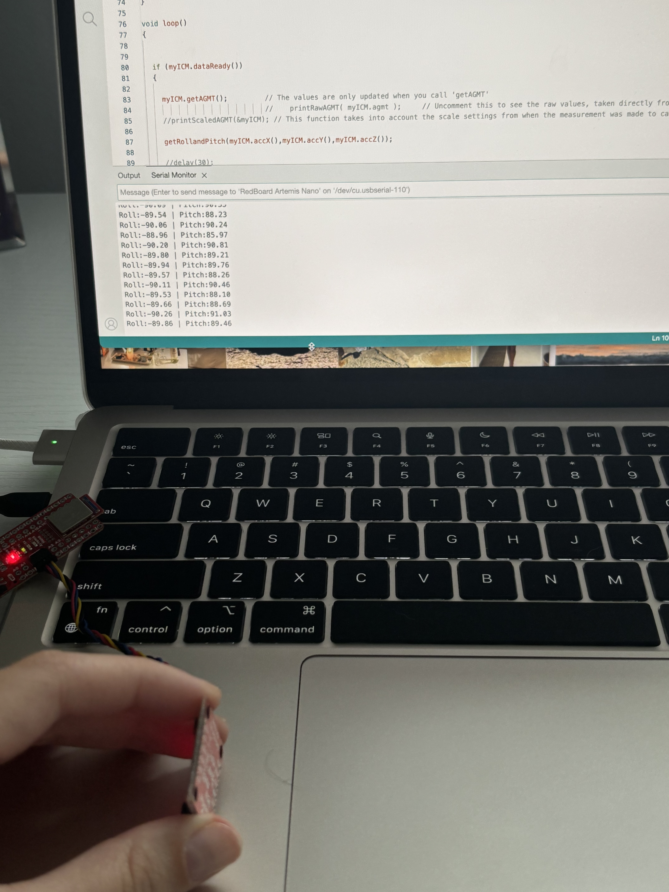
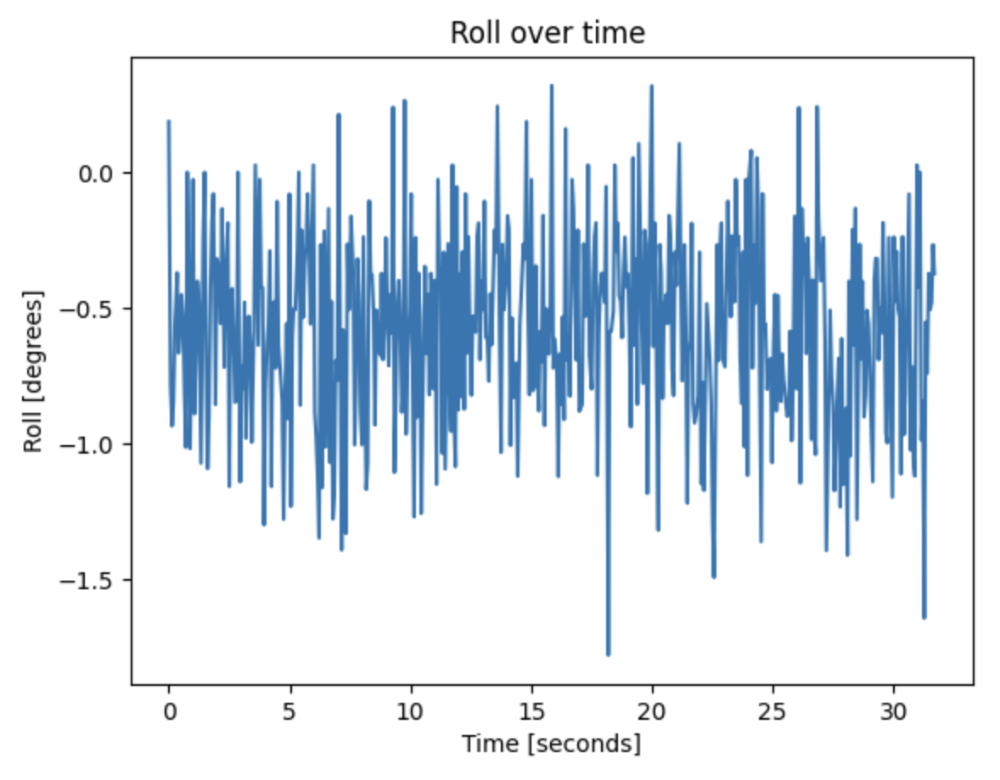
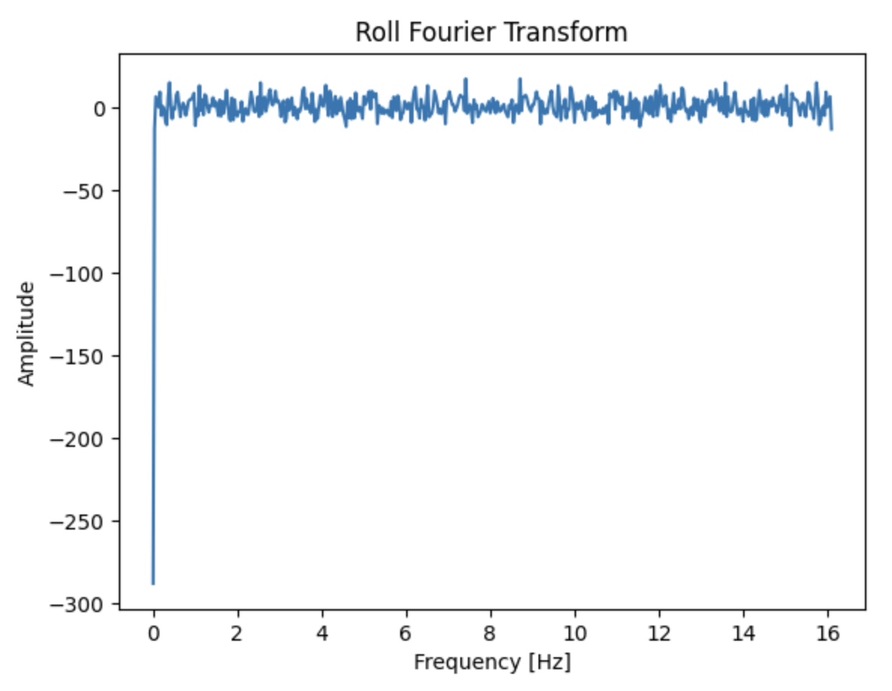
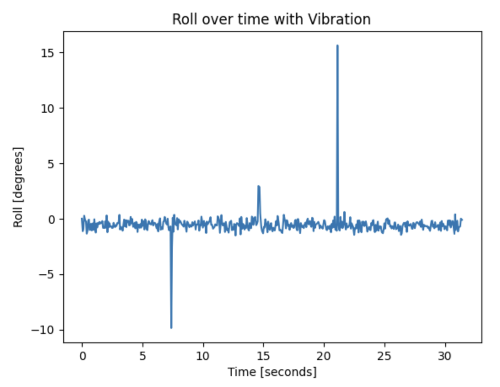
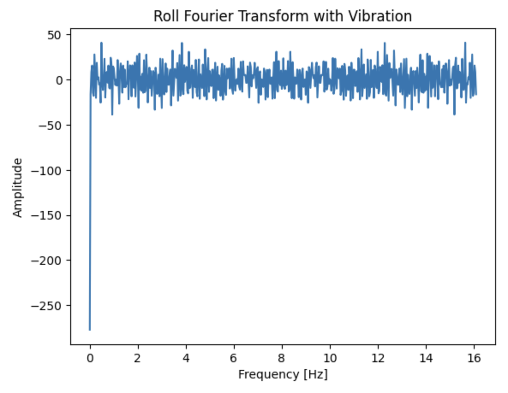
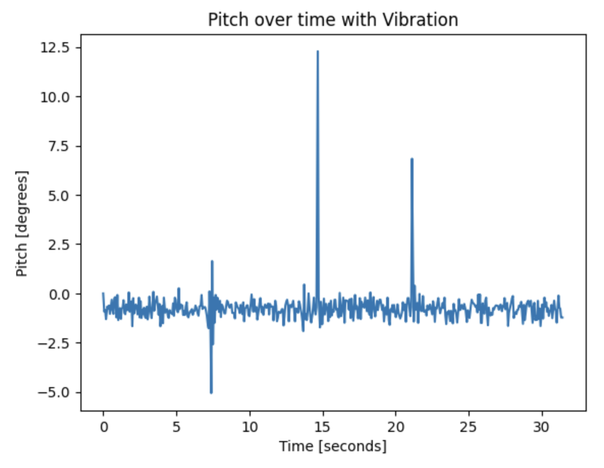
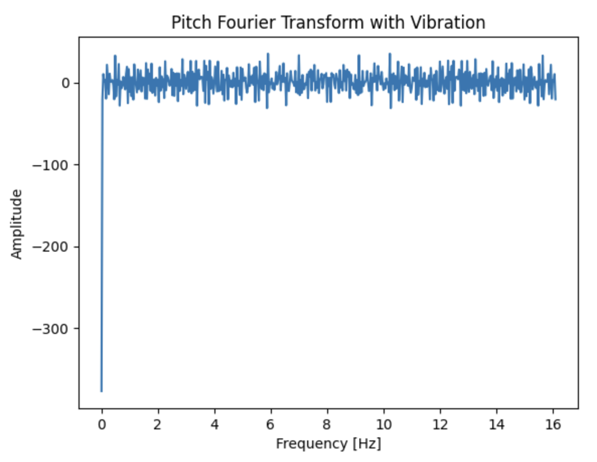

Lab 2: IMU
Objective: Familiarize myself with the IMU and how to integrate it to your robot. Also play around with the robot given, understand how to use it and its limits and faults.
Pre-Lab: Read up on the IMU and its datasheet. Skim through the lab instructions as well, so that when I get to the lab, I can start immediately since it's extensive.
TASK 1: SET UP THE IMU
I already had the libraries needed in Arduino because we used them in class so I proceeded to connect my IMU to the Artemis board via the QWICC connectors.

I then ran the example code Example1_Basics from the SparkFun 9DOF IMU Breakout ICM-20948 Arduino Library. This is what it outputted:
AD0 Value Discussion:
The AD0_VAL represents the value of the last bit in the I2C address. The default on the IMU is 1, but when the ADR jumper is closed, the value becomes 0. This controls the I2C address of the IMU: when AD0_VAL is 1, the address is 0x69, and when AD0_VAL is 0, the address is 0x68. This is useful when using multiple IMUs on the same I2C bus, allowing them to have different addresses and communicate independently.
Acc. & Gyr. Discussion:
To observe changes in accelerometer and magnetometer values, I placed the IMU in three different orientations and analyzed the serial monitor output. When positioned right-side up on a horizontal surface, the accelerometer readings were around 20 mg in the X and Y directions, indicating minimal tilt. In the Z direction, the values were around 1000 mg (~1g), meaning gravity was the primary acceleration detected. The gyroscope readings in this position were approximately 0 DPS, aside from minor offsets, which is expected since the IMU was stationary and should not register rotational movement. Here is the IMU in the upright orientation:

TASK 2:ACCELEROMETER
For this part, I adapted the code from Example1_Basics, edited the loop funciton and made a new function. At first my values for pitch and roll were printing out like if they were switched, but after talking with the Professor we realized that the lecture notes had a typo and the equations for roll and pitch were switched. We fixed it and got it working accordingly. These are my edits to the previous code:
void loop(){
if (myICM.dataReady()) {
myICM.getAGMT();
getRollandPitch(myICM.accX(),myICM.accY(),myICM.accZ());
delay(50); }
else {
SERIAL_PORT.println("Waiting for data");
delay(500);}}
void getRollandPitch(float x,float y,float z) {
float roll = 0;
float pitch = 0;
roll = atan2(y,z)*180/M_PI;
pitch = atan2(x,z)*180/M_PI;
SERIAL_PORT.print("Roll:");
SERIAL_PORT.print(roll);
SERIAL_PORT.print(" | Pitch:");
SERIAL_PORT.println(pitch);}
And this is the output at {-90,0,90}:
Accelerometer accuracy dicussion: For this part I decided to take bits of a sketch I had from a past project, adapt all the top stuff from the previous example code and then print out the conversion factor of each axis after collecting raw data. This is what the code printed:
Conv. Factor X: 0.41
Conv. Factor Y: 0.00
Conv. Factor Z: -0.00
From this data we can see that the y and z axis' values are fairly calibrated already, but the x does have an offset. Note: I did not collect data to calibrate the X-axis in this code. It only collected data from the IMU facing up and facing down (aka the Z-axis).
Noise in the frequency spectrum analysis:
The accelerometer is highly sensitive to its environment, which is why it tends to exhibit noise even when lying flat on my desk. To ensure accurate data collection when using the robot, this noise should be analyzed in the frequency spectrum. To achieve this, I recorded accelerometer data on the Artemis and transferred it to my computer to graph both the raw noise and its Fourier transform. This is the code I used in Python for the Fourier transform:

With this I graphed the raw noise for roll and pitch and their respective Fourier transform plot.
|  |  |
 |
 |
I then introduced vibrational noise by hitting the desk three times while the IMU was flat on it and you can observe the additional noise in the raw data plots.
|  |  |
|  |  |